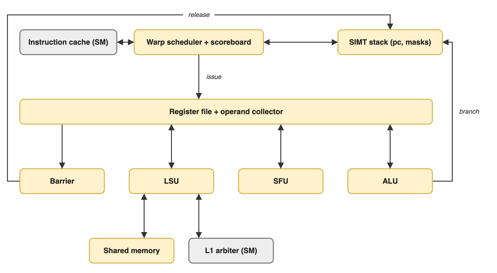

mGPU: a small open-source GPU in SystemVerilog
mGPU is a small GPU built to show how a GPU works on the inside: warps, SIMT branching, warp scheduling, register files, caches, shared memory, an MMU, a command processor and a DRAM controller. Every block is small enough to read in one sitting and has its own UVM testbench and plain-English PDF.
New to GPUs? Start with tiny-gpu
Read tiny-gpu by Adam Majmudar first. It is the smallest design that shows the core idea of a GPU: many threads running one instruction at the same time, each on its own data. Our guide GPU Basics with tiny-gpu explains it in simple words, and shows which mGPU block replaces each tiny-gpu part.
| tiny-gpu | mGPU | |
|---|---|---|
| Goal | the smallest design that shows the GPU idea | the same idea plus the parts real GPUs need to be fast |
| Size | 2 cores x 4 threads, 8-bit data, 256-byte memory | 2 SMs x 2 sub-cores x 4 warps x 8 threads, 32-bit data |
| Instructions | 11 (add, sub, mul, div, compare, branch, load, store, ...) | about 25, including logic, shifts, shared memory and barrier |
| Running code | one instruction at a time, in 6 steps | a warp scheduler issues a ready warp every cycle |
| Waiting for memory | the whole core waits | other warps keep running while one waits |
if / else where threads disagree | not supported (all threads must follow the same path) | supported: the warp splits and joins back (SIMT stack) |
| Memory | one simple controller, no cache | I-cache, L1, shared memory, 2 L2 banks, virtual memory (MMU), AXI4 bus, DRAM model |
| Starting a kernel | testbench sets a register and raises start | the CPU writes commands into a ring buffer; a command processor reads and runs them |
| Testing | 2 kernel tests | a UVM testbench with coverage for each block, plus a full-chip test checked against a reference model |
How a GPU runs a kernel in mGPU
- The CPU gives the order. It writes commands into a ring buffer in memory and rings a doorbell register.
- The command processor reads it. It fetches and decodes the commands, then runs them: set up, launch a kernel, write a fence.
- The work is split up. The dispatcher cuts the kernel into workgroups and sends each one to a free sub-core.
- The threads run. The warp scheduler picks a ready warp each cycle; the ALU, SFU, LSU or barrier does the work; the SIMT stack handles
if/elsewhere threads disagree. - Memory is reached step by step. L1 cache, crossbar, L2 cache, MMU (virtual to physical), AXI4 bus, DRAM.
- The CPU is told it is done. A fence write and an interrupt.
Block diagrams



Every block, in one line
| Block | Folder | What it does |
|---|---|---|
| CP packet decoder | rtl/01_cp_packet_decoder | Splits the PM4 command stream into register writes and operations for the SQE. |
| CP ring fetch | rtl/02_cp_ring_fetch | Reads command dwords from the ring buffer in memory and streams them to the decoder. |
| CP SQE | rtl/03_cp_sqe | Runs the operations: dispatch a kernel, write a fence (plus interrupt), wait for idle. |
| RBBM | rtl/04_rbbm | The CPU's register port (APB): ring pointers, interrupts, hang watchdog, perf counters, soft reset. |
| Dispatcher | rtl/05_dispatcher | Turns one kernel dispatch into workgroup launches on free sub-cores. |
| Instruction cache | rtl/06_icache | Direct-mapped cache of instructions, shared by the two sub-cores of an SM. |
| Warp scheduler | rtl/07_warp_scheduler | Fetches instructions per warp, tracks register hazards (scoreboard), issues one ready warp per cycle. |
| SIMT stack | rtl/08_simt_stack | Holds each warp's pc and active-thread mask; splits and rejoins a warp at divergent branches. |
| Register file + collector | rtl/09_regfile_collector | Banked registers for all warps; gathers operands and sends instructions to the right unit, takes write-backs. |
| ALU | rtl/10_alu | 8-lane integer math, logic, compares and branch decisions, one instruction per cycle. |
| SFU | rtl/11_sfu | Slow multi-cycle functions (divide, remainder) on 8 lanes. |
| Shared memory + barrier | rtl/12_shared_mem_barrier | Banked scratchpad shared by a workgroup's warps; barrier makes warps wait for each other. |
| LSU | rtl/13_lsu | Executes loads and stores; merges lanes that hit the same line into one memory request (coalescing). |
| L1 data cache | rtl/14_l1_dcache | 2-way data cache per SM, write-through; cleared at each new kernel. |
| SM | rtl/15_sm | Wraps 2 sub-cores, the I-cache, the L1 and the arbiters into one streaming multiprocessor. |
| Crossbar | rtl/16_crossbar | Routes each SM's memory request to the L2 bank that owns the address. |
| L2 cache | rtl/17_l2_cache | 2 banks, write-back, shared by all SMs; can be flushed by command. |
| MMU | rtl/18_mmu | Translates virtual to physical addresses with a TLB and 2-level page tables; reports faults. |
| GBIF | rtl/19_gbif | The GPU's bus interface: turns one 32-byte line request into one AXI4 burst. |
| DRAM controller | rtl/20_dram_ctrl | AXI4 slave in front of the memory array, with row-buffer hit/miss timing. |
| GMU | rtl/21_gmu | Powers idle SMs off after a timeout and wakes them when the dispatcher needs them. |
| Top | rtl/22_mgpu_top | Connects every block into the full GPU (mgpu_top) and adds DRAM (mgpu_system). |
| Shared definitions | rtl/common | ISA opcodes, sizes and helpers used by every block. |